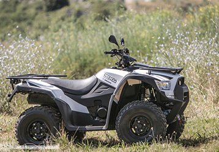
01Quad
Découvrez le désert des Agriates et la Corse sauvage. Idéal pour les amateurs de sensations et de grands espaces.
- Modèle 550 MXU
- Demi-journée ou journée
Avec ou sans permis, explorez le désert des Agriates, le Cap Corse et les plus belles plages de Haute-Corse. Une équipe locale au cœur de Saint-Florent.
Trois prestations pour explorer la Corse à votre rythme.

01Découvrez le désert des Agriates et la Corse sauvage. Idéal pour les amateurs de sensations et de grands espaces.
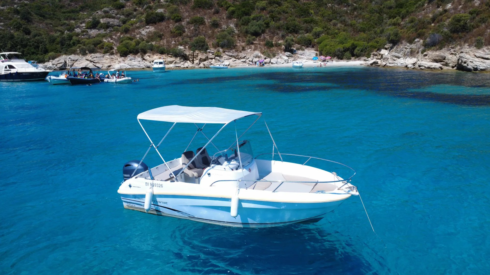
02Explorez le Cap Corse et les plus belles plages de Haute-Corse. Des criques accessibles uniquement par la mer.
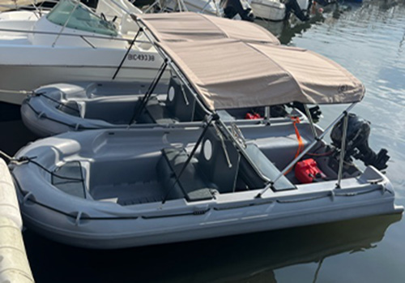
03Naviguez en toute liberté, sans permis, et composez votre journée le long du littoral. Parfait en famille.
Un bateau confortable et facile à prendre en main, jusqu'à 6 personnes — parfait pour explorer les criques de Haute-Corse.
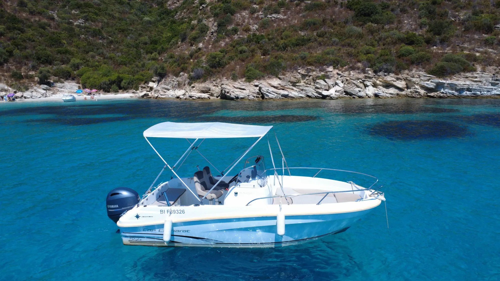
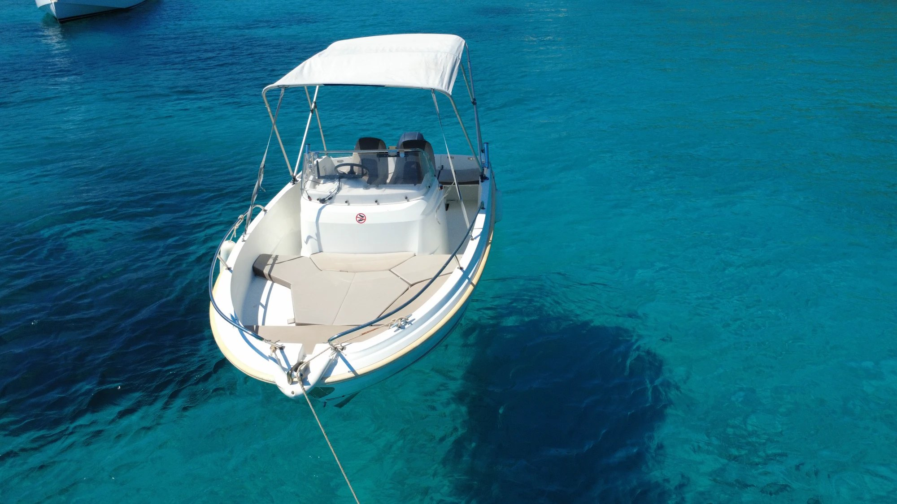
Le semi-rigide haut de gamme : 500 cv, jusqu'à 14 personnes, pour les grandes journées en mer et les plus belles balades du Cap Corse.
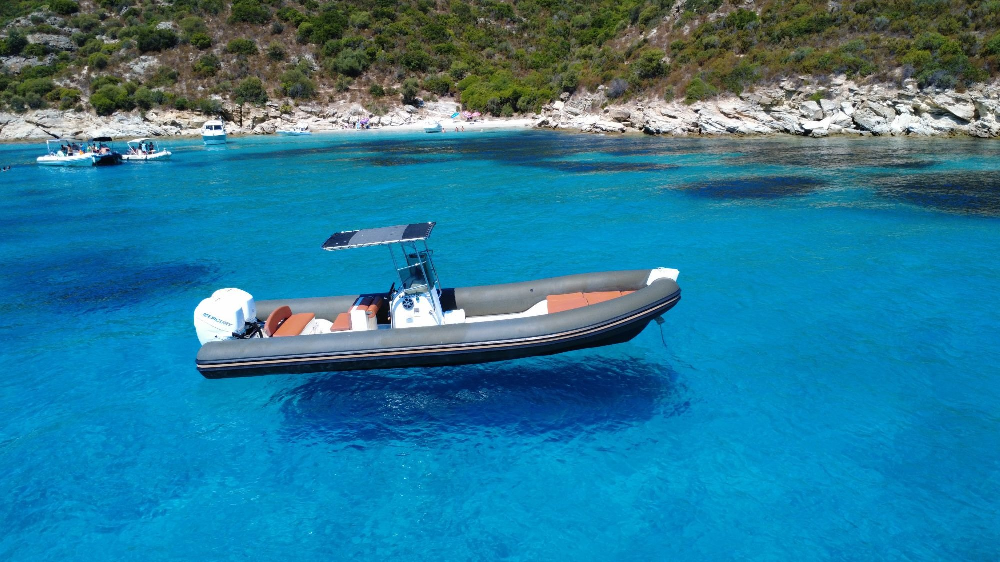
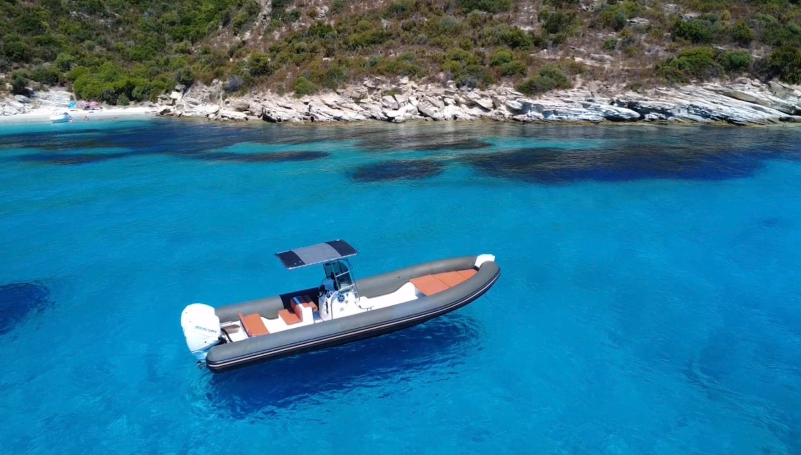
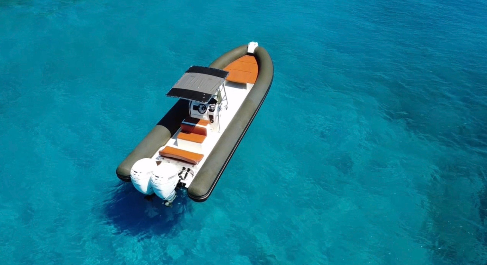
Quelques lieux incontournables à rejoindre en quad ou en bateau.
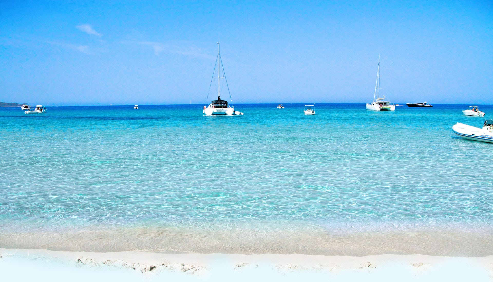
La plage de Saleccia, située dans le désert des Agriates en Haute-Corse, est aujourd'hui l'une des plages les plus célèbres de l'île. Son histoire est étroitement liée à celle des Agriates, un territoire qui n'a pourtant jamais été un véritable désert. Pendant des siècles, cette région était un important grenier agricole, où l'on cultivait principalement le blé, les oliviers et où les bergers pratiquaient la transhumance. Après la Première Guerre mondiale et l'exode rural, ces terres ont été progressivement abandonnées et le maquis a repris ses droits.
La plage a également joué un rôle durant la Seconde Guerre mondiale. En juillet et août 1943, le célèbre sous-marin français Casabianca y a débarqué clandestinement des armes et des munitions destinées à la Résistance corse, contribuant à la libération de l'île.
Quelques années plus tard, Saleccia est devenue un décor de cinéma. En 1961, plusieurs scènes du film Le Jour le plus long, consacré au Débarquement de Normandie, y ont été tournées. Les producteurs américains avaient choisi cette plage en raison de son aspect très sauvage, les plages normandes étant déjà trop urbanisées pour les besoins du tournage. Pour recréer l'ambiance du 6 juin 1944, la plage fut temporairement aménagée avec de faux obstacles, des véhicules factices et des effets spéciaux.
Aujourd'hui, Saleccia est protégée par le Conservatoire du littoral. Son accès difficile (par bateau, à pied ou en piste 4×4) a permis de préserver son sable blanc, ses dunes, ses pins d'Alep et ses eaux turquoise. Elle est souvent considérée comme l'une des plus belles plages de Corse.
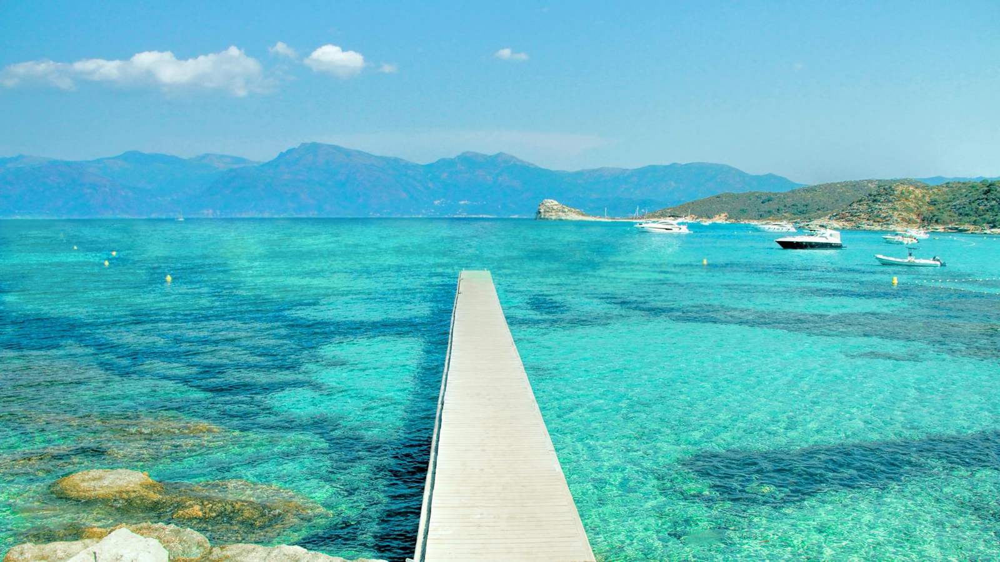
La plage du Lotu (ou Loto) se trouve elle aussi dans le désert des Agriates, à quelques encablures de Saleccia. Sauvage et préservée, elle n'est accessible que par la mer — en navette maritime depuis Saint-Florent — ou à pied par le sentier du littoral, ainsi que par les pistes 4×4.
Son sable clair et ses eaux peu profondes d'un bleu translucide en font un lieu de baignade idéal, notamment en famille. Toute proche de Saleccia — quelques minutes seulement en bateau — elle en est aussi reliée par un sentier côtier d'environ une heure de marche, l'une des plus belles balades du littoral corse.
Comme l'ensemble des Agriates, le site est protégé par le Conservatoire du littoral, ce qui garantit la préservation de ses dunes et de son cadre naturel exceptionnel.
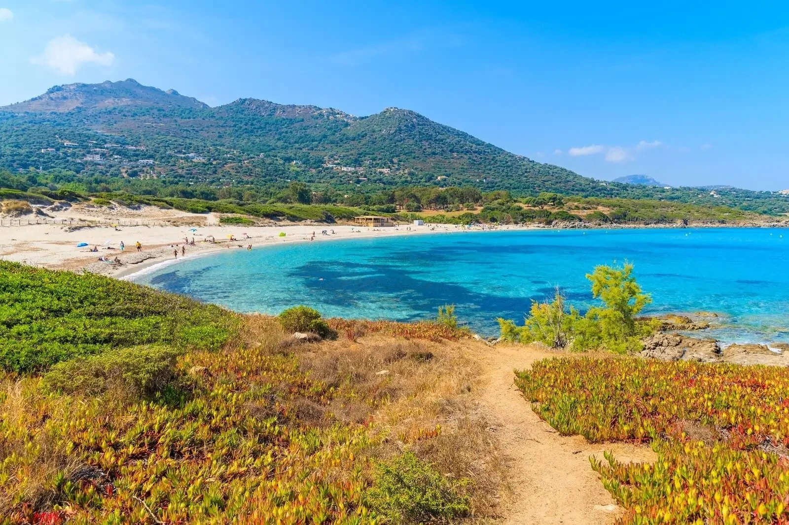
Le désert des Agriates s'étend sur près de 15 000 hectares entre l'embouchure de l'Ostriconi et le golfe de Saint-Florent. Malgré son nom, il n'a jamais été un vrai désert : son appellation viendrait du latin ager, « le champ ».
Pendant des siècles, ce fut au contraire une terre nourricière où l'on cultivait le blé et l'olivier, et où les bergers du Niolu menaient leurs troupeaux en transhumance, s'abritant dans de petites cabanes de pierre, les pagliaghji. L'exode rural du XXe siècle a laissé le maquis recouvrir ces terres.
Aujourd'hui protégé par le Conservatoire du littoral, ce territoire sauvage abrite certaines des plus belles plages de Corse — Saleccia, Lotu, Ghignu — et se découvre à pied, en quad, en 4×4 ou par la mer.
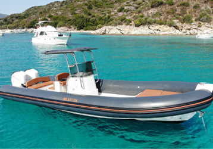
Surnommé « l'île dans l'île », le Cap Corse est la longue péninsule qui prolonge la Corse vers le nord. Ses versants plongeant dans la mer, ses villages perchés, ses tours génoises et ses marines de pêcheurs en font une région à part, restée authentique.
À sa pointe se niche Centuri, petit port de pêche aux maisons colorées et aux toits de schiste vert, réputé pour être l'un des hauts lieux de la pêche à la langouste en France. On y savoure un poisson d'une fraîcheur incomparable, face aux barques multicolores et aux couchers de soleil sur la Méditerranée.
Horaires : journée 9h00–18h00 · demi-journée 9h00–13h30 ou 13h30–18h00. Bateaux avec permis fournis avec le plein, à rendre avec le plein (carburant SP95 non compris).
Moyens de paiement acceptés : espèces, chèques, carte bancaire.
Une question ou une réservation ? Contactez-nous, nous vous répondrons rapidement.
La réservation se fait par téléphone — appelez-nous, on s'occupe de tout !
06 86 93 45 43 06 71 20 54 35 ✉️ Écrire un email